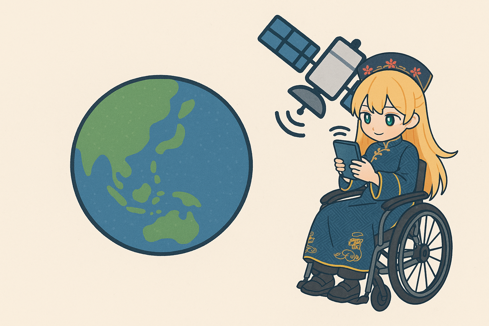
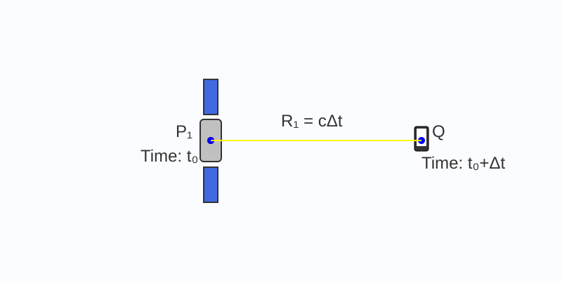
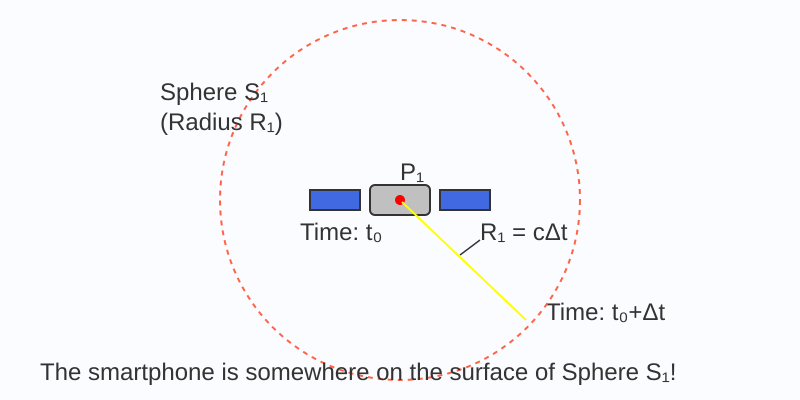
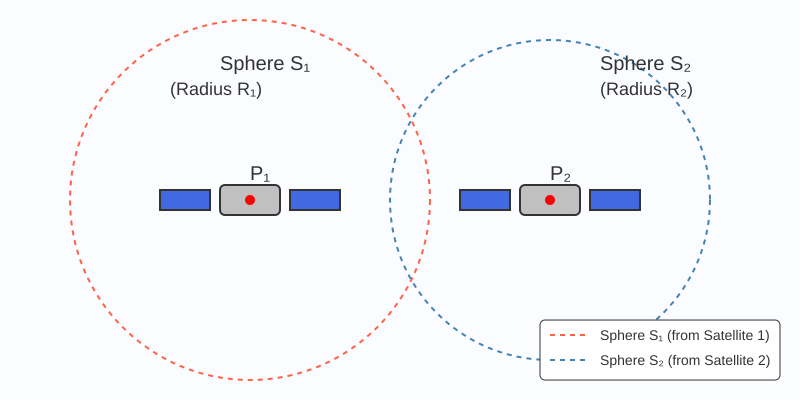
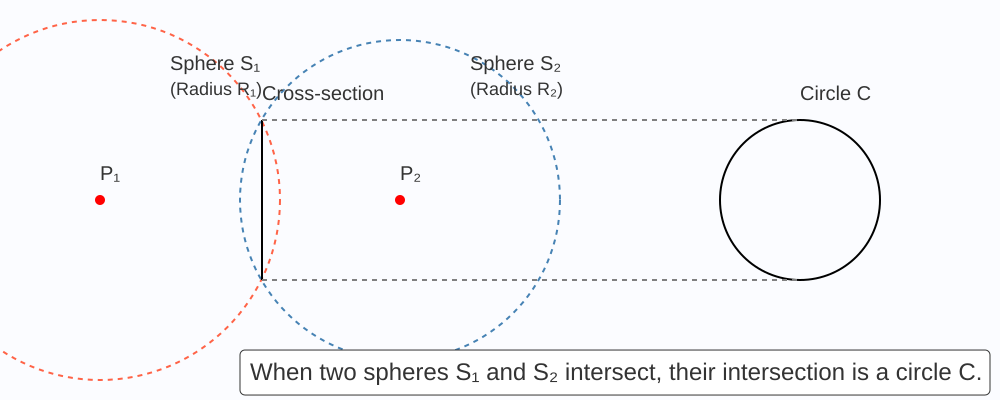
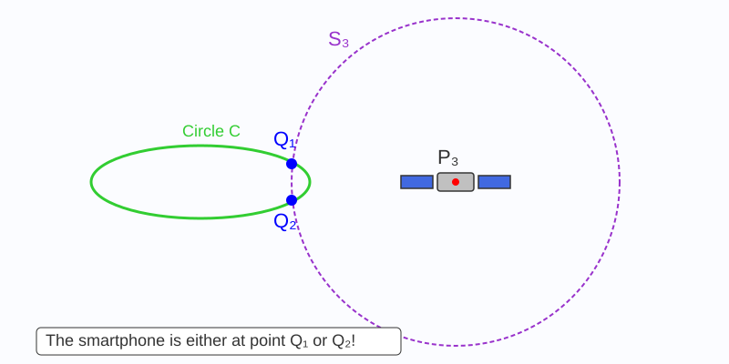
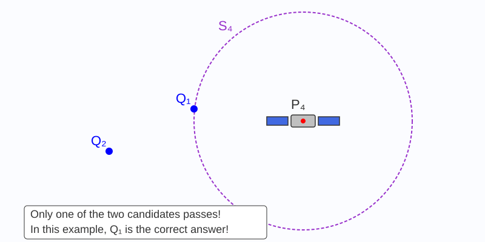
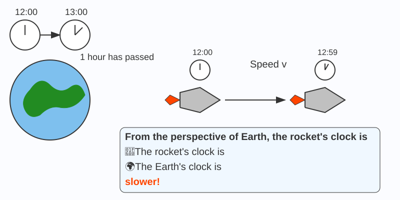
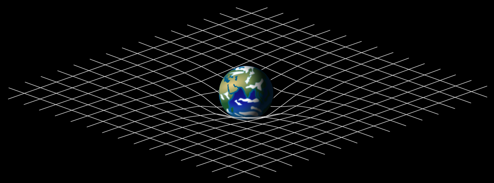
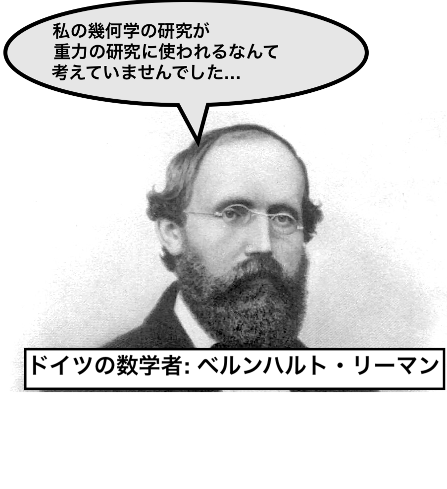

## 🛰️GPS中的相對論 #### 衛星如何測量智慧型手機的位置？ <p></p> --- ### 今天的主題 <div class="simple-box"> * 🛰️GNSS（如GPS）如何測量位置？ * 不考慮相對論效應的情況（幾何光學） * 狹義相對論的效應 * 廣義相對論的效應 </div> </br> <div class="highlight-box"> * 📱您將了解當您的智慧型手機在地圖應用程式上顯示位置時發生了什麼！ </div> --- ### 假設條件 <div class="simple-box"> * 地球是一個球體 * 地球不旋轉 * 地球是電中性的 * 地球的質量分佈是均勻的 * 地球沒有大氣層（真空） * 不存在其他天體（如月球） </div> </br> <div class="highlight-box"> * 這些假設與現實相去甚遠，但它們簡化了問題！ * 令人驚訝的是，這個近似效果很好 </div> --- ### 技術術語 <div class="simple-box"> * GNSS（全球導航衛星系統）是衛星定位系統的總稱 * 🇺🇸GPS（全球定位系統）是GNSS的一種 * 其他包括🇷🇺GLONASS、🇪🇺Galileo、🇨🇳北斗、🇯🇵Michibiki * 今天，我們將使用GPS這個最為台灣人所熟悉的稱呼 * 就像把所有遊戲機都稱為「紅白機」一樣 - 技術上不正確，但普遍使用 </div> --- ## 使用幾何光學進行位置測量 --- ### 距離測量的簡單例子 <div class="simple-box"> - 從點$A$出發，時間$t=0 \ (\mathrm{s})$，速度$v=10 \ (\mathrm{m/s})$向點$B$移動 - 在時間$t=10 \ (\mathrm{s})$到達點$B$ - $A$和$B$之間的距離是多少？ </div> $$ ||AB|| = 10 \ (\text{m/s}) \times 10 \ (\text{s}) = 100 \text{m} $$ <div class="highlight-box"> - **兩點之間的距離可以計算為速度$\times$時間！** </div> --- ### 使用光進行距離測量 <div class="simple-box"> * 光速：$c = 3.0 \times 10^8 \text{(m/s)}$ * 衛星在時間$t_0$從點$P$發射電磁波 * 智慧型手機在時間$t_0 + \Delta t$在點$Q$接收電磁波 </div> <br> <div class="highlight-box"> $$ ||PQ|| = c \Delta t $$ </div> --- ### 使用一顆衛星進行定位 <div class="simple-box"> * 衛星在時間$t_0$從點$P_1$發射無線電波，智慧型手機在$\Delta t$後接收 * 點$P_1$和$Q$之間的距離為$R_1 = c \Delta t$ </div> <p></p> --- ### 智慧型手機在哪裡？ <div class="highlight-box"> * 它在以$P_1$為中心，半徑為$R_1$的球面$S_1$上的某處！ </div> <p></p> --- ### 使用兩顆衛星進行定位 <div class="simple-box"> * 同樣地從兩顆衛星測量距離 * 智慧型手機在球面$S_1$上的某處 * 同時也在球面$S_2$上的某處 </div> <p></p> --- ### 縮小智慧型手機的位置範圍 <div class="highlight-box"> * 兩個球面的交線是一個圓 * 它在圓$C$的圓周上的某處！ * **通過增加衛星數量，我們可以縮小位置範圍！** </div> <p></p> --- ### 使用三顆衛星進行定位 <div class="simple-box"> * 從第三顆衛星得到球面$S_3$ * 我們知道它在圓$C$的圓周上，相交於兩點 * **現在我們只剩下兩個可能的位置！** </div> <p></p> --- ### 使用四顆衛星進行定位 <div class="simple-box"> * 從第四顆衛星得到球面$S_4$ * **通過四顆衛星的距離測量，我們可以確定智慧型手機的位置$Q$！** </div> <p></p> --- ### 總結 <div class="simple-box"> * 接收一顆GPS衛星的信號，我們知道智慧型手機在球面上 * 接收四顆衛星的信號，我們可以確定位置 * **我們可以通過球面的交點來確定智慧型手機的位置！** </div> --- ### 補充說明 <div class="simple-box"> * 實際上，我們將地球表面視為另一個球面，使用三顆衛星進行定位 * 對於飛機來說，第四顆衛星的定位很重要！ </div> --- ## 狹義相對論的效應 --- ### 狹義相對論的重要主張 <div class="container"> <div class="col-left"> <div class="simple-box"> * 高速運動的物體對靜止觀察者來說時間流逝較慢 * 這是一個高度簡化的解釋！ </div> </div> <div class="col-right"> </div> </div> --- ### 狹義相對論的例子 <div class="simple-box"> * 考慮一個相對於地球以速度$v$運動的火箭 * **從地球的角度來看**，火箭的時鐘似乎走得較慢！ </div> <p></p> --- ### 勞倫茲因子 </br> <div class="highlight-box"> * 當火箭時鐘前進了$t'$秒時，地球時鐘前進了$t$秒 * 這個$\gamma$被稱為勞倫茲因子 $$ t' = \frac{t}{\sqrt{1 - v^2/c^2}} = \gamma t $$ </div> --- ### 時間膨脹的簡單例子 <div class="simple-box"> * 讓我們考慮一個速度為$v = 4.2 \times 10^7 \text{(m/s)}$的火箭 * 地球時鐘前進1秒時，火箭時鐘前進0.99秒 * 從地球的角度來看，**火箭時鐘快了0.01秒** </div> $$ \Delta t = 1 - \frac{t'}{\gamma} = 1 - \sqrt{1 - \dfrac{(4.2 \times 10^7)^2}{(3.0 \times 10^8)^2}} \simeq 0.01 \text{(s)} $$ --- ### 狹義相對論對時間的影響 <div class="simple-box"> * GPS衛星的速度 * GPS衛星的高度約為20,000公里 * GPS衛星的速度約為3.9公里/秒 </div> $$ \Delta t_{\mathrm{sec}} = 1 - \frac{t'}{\gamma} \simeq 1 - 8.5 \times 10^{-11} $$ <div class="highlight-box"> * 地球時鐘前進1秒時，GPS衛星時鐘快了$8.5 \times 10^{-11}$秒 </div> --- ### 每日時間差 <div class="simple-box"> * 1天是$24 \text{(h)} \times 60 \text{(min)} \times 60 \text{(s)} = 86400 \text{(s)}$ * GPS衛星時鐘的每日延遲： </div> $$ \Delta t_{\mathrm{day}} = 86400 \text{(s)} \times 8.5 \times 10^{-11} \simeq 7.3 \mathrm{(\mu s)} $$ <div class="highlight-box"> * $ c \Delta t_{\mathrm{day}} \simeq 2.2 \text{(km)}$，所以**在距離測量中會出現顯著的時間差！** * GPS定位需要對這個時間差進行校正！ </div> --- ## 廣義相對論的效應 --- ### 廣義相對論的主張 <div class="simple-box"> * 質量會造成時空扭曲 * 這種扭曲就是重力 * 在重力場中時間流逝較慢 </div> <div class="container"> <div class="col-left"> <p></p> <div class="caption"> Mysid, Wikipedia Commons (CC BY-SA 3.0). </div> </div> <div class="col-right"> <p></p> </div> </div> --- ### 重力如何影響時間 <div class="simple-box"> * 重力越強，時間流逝越慢 * 重力越弱，時間流逝越快 </div> </br> <div class="highlight-box"> * 地球表面更接近地球中心，所以重力較強，時鐘較慢 * GPS衛星在20,000公里的高度，所以重力較弱，時鐘較快 </div> --- ### 史瓦西度規 <div class="simple-box"> * 表示時空扭曲（重力）的最簡單度規 * $r$是到物體中心的距離 * **地球的重力可以用史瓦西度規來近似** </div> $$ ds^2 = -\left(1-\frac{2GM}{c^2r}\right)c^2dt^2 + \left(1-\frac{2GM}{c^2r}\right)^{-1}dr^2 $$ $$ \ + \quad r^2(d\theta^2 + \sin^2\theta d\phi^2) $$ --- ### 為什麼地球的重力可以用史瓦西度規來近似？ <div class="simple-box"> * 史瓦西度規的假設 * 物體是球對稱且靜止的 * 物體不旋轉 * 物體是電中性的 </div> <br> <div class="highlight-box"> * 今天的地球滿足這些條件！ * 實際地球的影響由於這個近似而可以忽略 </div> --- ### 史瓦西度規的進一步近似 <div class="simple-box"> * 測量位置的智慧型手機的速度相對於光速來說非常慢，所以我們可以認為它幾乎是靜止的！ * **我們可以忽略史瓦西度規的空間分量！** </div> $$ ds^2 = -\left(1-\frac{2GM}{c^2r}\right)c^2dt^2 $$ <div class="highlight-box"> * 時間膨脹僅由重力引起！ </div> --- ### 地球重力引起的時間膨脹 $$ d\tau = - \frac{ds^2}{c^2} = \sqrt{1-\frac{2GM}{c^2r}} dt \simeq \left(1 - \frac{GM}{c^2r} \right) dt $$ <div class="simple-box"> * 這裡$r$是到地球中心的距離 * 地球中心前進1秒時，距離$r$處的點前進右側的值 * 在較強的重力場中更快 </div> --- ### 地球和衛星之間的時間差 <div class="highlight-box"> * 讓我們將地球半徑表示為$R$ * 讓我們將GPS衛星的高度表示為$h$ * GPS衛星到地球中心的距離是$R + h$ </div> * 地球時鐘和GPS衛星時鐘之間的時間差： $$ \Delta t = \left(1 - \frac{GM}{c^2(R+h)}\right) - \left(1 - \frac{GM}{c^2R}\right) $$ $$ = \frac{GM}{c^2}\left(\frac{1}{R} - \frac{1}{R+h} \right) $$ --- ### 計算中使用的數值 <div class="simple-box"> * 代入以下數值： * $G = 6.674 \times 10^{-11} \mathrm{(m^3 kg^{-1} s^{-2})}$ * $M = 5.972 \times 10^{24} \text{(kg)}$ * $R = 6.378 \times 10^6 \text{(m)}$ * $h = 2.0 \times 10^7 \text{(m)}$ * $c = 3.0 \times 10^8 \text{(m/s)}$ </div> --- ### 計算結果 <div class="highlight-box"> * GPS衛星時鐘和地球時鐘之間的每日時間差： $$ \Delta t_{\mathrm{day}} \simeq 45.5 \mathrm{(\mu s)} $$ </div> <br> <div class="highlight-box"> * 1天，GPS衛星時鐘比地球時鐘快了45.5 $\mathrm{\mu s}$ * 比狹義相對論引起的時間延遲更大！ </div> --- ### 總時間差 <div class="simple-box"> * 狹義相對論引起的時間延遲是$-7.3 \mathrm{\mu s}$（延遲） * 廣義相對論引起的時間提前是$+45.5 \mathrm{\mu s}$（提前） </div> <br> <div class="highlight-box"> * 兩者相加： $$ \Delta t_{\mathrm{total}} = 45.5 - 7.3 = +38.2 \mathrm{\mu s} $$ * **1天，GPS衛星比地球時鐘快了38.2 $\mathrm{\mu s}$！** </div> --- ### 會發生什麼？ <div class="simple-box"> * 1天，時鐘快了38.2 $\mathrm{\mu s}$ * 35天，距離約為400公里（東京-大阪的距離） * **如果您從東京出發前往東京，您最終會到達大阪！** </div> --- ### 我們如何校正它？ <div class="simple-box"> * **1天，我們故意將時鐘調慢38.2 $\mathrm{\mu s}$！** * 從而達到平衡 * 嚴格來說，我們使用不同時鐘頻率的時鐘 </div> <br> <div class="highlight-box"> * 理論計算很優雅 * **但解決方案出奇地簡單！** * GNSS是優雅和簡單的結合！ </div> --- ### 總結 <div class="simple-box"> * GPS測量光從衛星到達測量設備所需的時間 * 1顆衛星：球面，2顆衛星：圓周，3顆衛星：2點，4顆衛星：1點，衛星越多，位置範圍越小 * 準確定位需要準確的時間校正 * 狹義相對論引起的時間延遲 * 廣義相對論引起的時間提前 * **相對論無處不在！** </div> --- ### 參考文獻 * 全球導航衛星系統國際委員會，[GNSS，工作原理和應用](https://www.unoosa.org/pdf/icg/2015/presentations/31.pdf) * 詳細解釋了為什麼通過增加衛星數量可以提高定位精度 * 許多插圖，易於理解 --- ### 參考文獻 * Neil Ashby，[全球定位系統中的相對論](file:///Users/earthsea-wizard-archipelago/Desktop/lrr-2003-1.pdf)，DOI: 10.12942/lrr-2003-1 * 我們主要參考了這篇綜述論文，了解由於相對論效應導致的GNSS時鐘校正方法 * 詳細解釋了大地水準面校正等更高級的主題 --- ### 參考文獻 * 内山龍雄，[相對論](https://www.iwanami.co.jp/book/b260769.html)，岩波書店 (1989) * 我們參考了這本教科書了解相對論的基本概念 * 從狹義相對論到廣義相對論的基礎知識的簡潔總結 * 著名的開場白 * "如果您無法理解這一點，您可能應該放棄學習相對論。" * ...我不這麼認為 --- ### 徵求LT演講者 <div class="simple-box"> * 我們正在徵求物理會議的LT演講者！ * 任何主題都可以！ * 如果沒有人報名，組織者將以LT的名義舉辦Jaiyan Ressairoku（LT活動）... * 如果您有興趣，請加入物理會議的Discord伺服器！ </div> --- ### 公告 <div class="simple-box"> * 下次會議定於5月3日 * 我們將一起觀看物理影片 * 我們也在徵求「我想和大家一起看這個影片！」的提案！ </div>